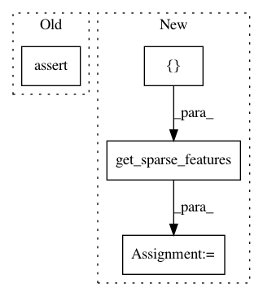

815a9afb26358230fc49704edbfbbeb048f55937,tests/nlu/featurizers/test_count_vectors_featurizer.py,,test_count_vector_featurizer_attribute_featurization,#Any#Any#Any#Any#Any#,106
Before Change
== response_features
)
else:
assert train_message.get(SPARSE_FEATURE_NAMES[RESPONSE]) is None
@pytest.mark.parametrize(
"sentence, intent, response, text_features, intent_features, response_features",
After Change
tk.train(data)
ftr.train(data)
intent_vecs = train_message.get_sparse_features(INTENT, [])
response_vecs = train_message.get_sparse_features(RESPONSE, [])
if intent_features:
assert intent_vecs.toarray()[0] == intent_features
else:
In pattern: SUPERPATTERN
Frequency: 3
Non-data size: 4
Instances
Project Name: RasaHQ/rasa
Commit Name: 815a9afb26358230fc49704edbfbbeb048f55937
Time: 2020-06-05
Author: tabergma@gmail.com
File Name: tests/nlu/featurizers/test_count_vectors_featurizer.py
Class Name:
Method Name: test_count_vector_featurizer_attribute_featurization
Project Name: RasaHQ/rasa
Commit Name: 815a9afb26358230fc49704edbfbbeb048f55937
Time: 2020-06-05
Author: tabergma@gmail.com
File Name: tests/nlu/featurizers/test_count_vectors_featurizer.py
Class Name:
Method Name: test_count_vector_featurizer_persist_load
Project Name: RasaHQ/rasa
Commit Name: 815a9afb26358230fc49704edbfbbeb048f55937
Time: 2020-06-05
Author: tabergma@gmail.com
File Name: tests/nlu/featurizers/test_count_vectors_featurizer.py
Class Name:
Method Name: test_count_vector_featurizer_response_attribute_featurization